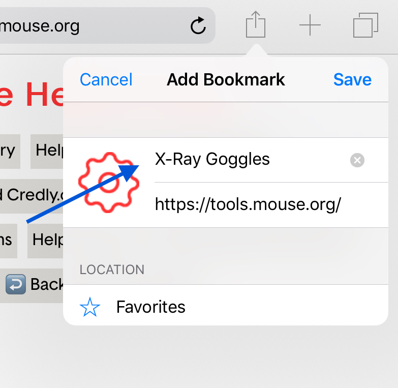
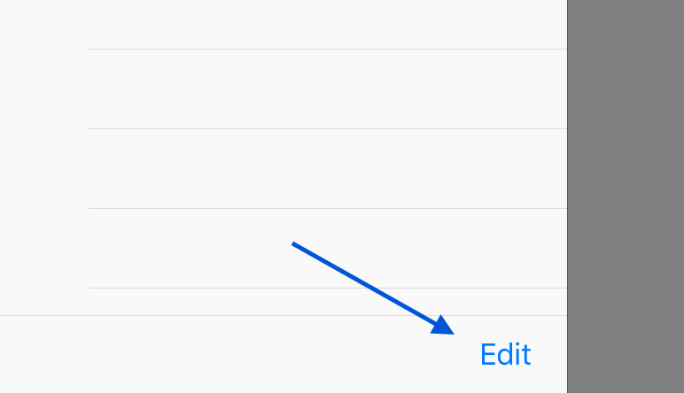
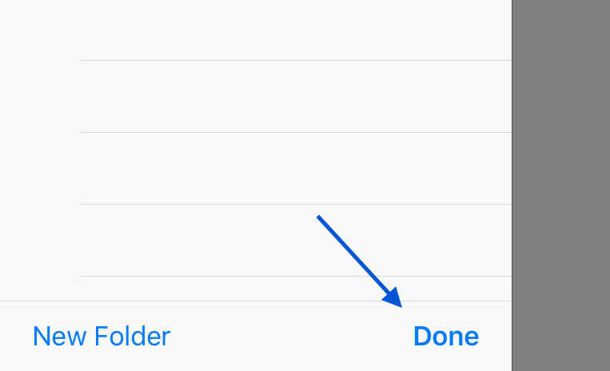

{{ header }}
Add the X-Ray Goggles Bookmarklet to your iPad:
These instructions will allow you to add the X-Ray Goggles bookmark to your iPad. The X-Ray Goggles work on an iPad but can be difficult to use because of the touch screen and because iOS Safari it is not as fast as a desktop browser.
We recommend using a desktop browser with X-Ray Goggles, but if you only have access to iPads the following steps will provide a workaround.
-
Open this page on your iPad and click on the Share icon in the top right corner of the screen.

-
Click the Add Bookmark button

-
Change the name of the bookmark to "X-Ray Goggles", make sure you are saving to "Favorites", and click "Save".
 -
Copy the code below:
-
Click the bookmark icon in the top left corner of the screen.

-
Click on the "Favorites" row.

-
Click "Edit" in the bottom right corner of the Bookmarks panel.
 -
Click on the "X-Ray Goggles" bookmark you created.

-
Paste the code into the "Address" of the bookmark. Then click the "Done" key on your keyboard.

-
Click "Done" at the bottom of the bookmarks panel.
 -
You are done! Next go to a site you want to use your goggles on (try google.com), open the bookmarks panel and click "X-Ray Goggles" to enable your bookmarks